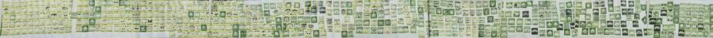
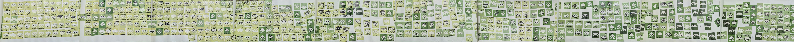
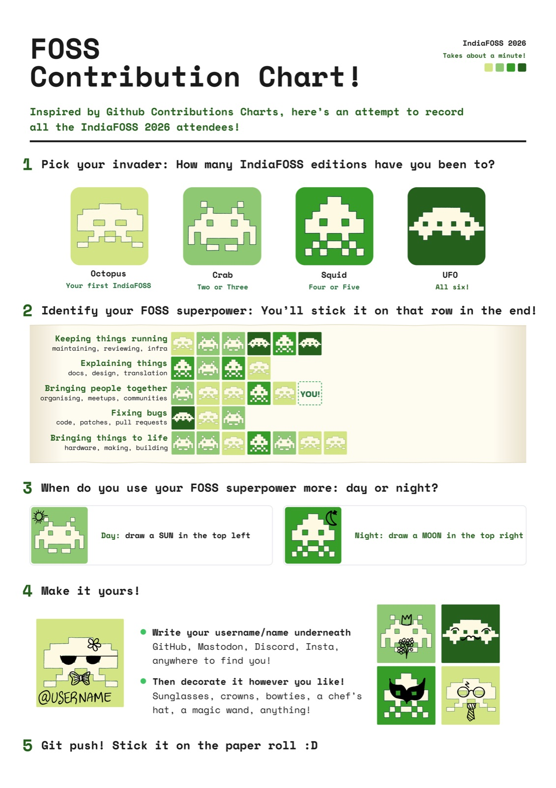
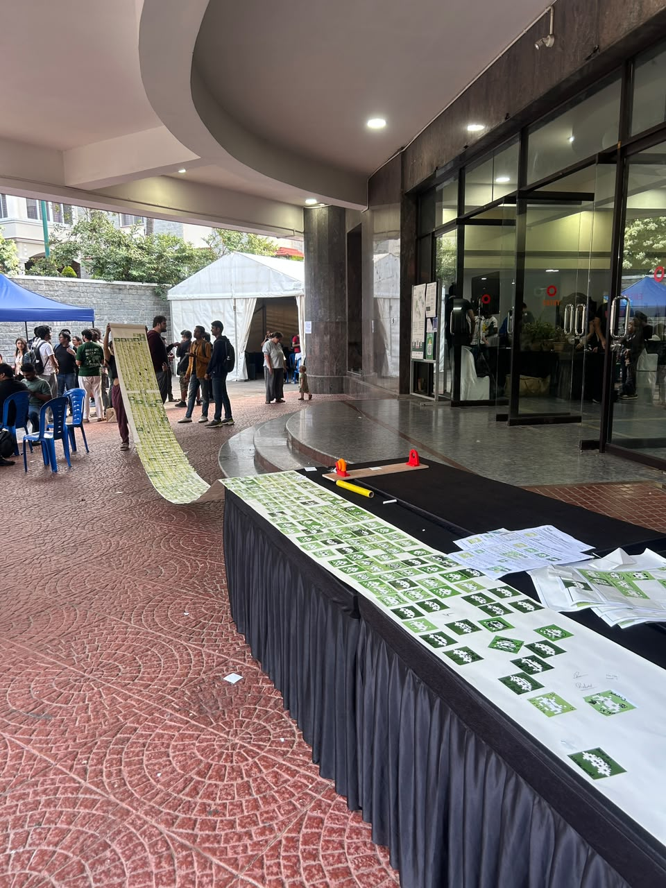

Inspired by github contribution charts, this was an attempt to record all the IndiaFOSS 2026 attendees


Hover to magnify and pause. Drag to move it yourself.


Video credits: Sai Rahul Poruri and Sai Motupali Nair
Participatory Data Viz Made for IndiaFOSS 2026, Bengaluru